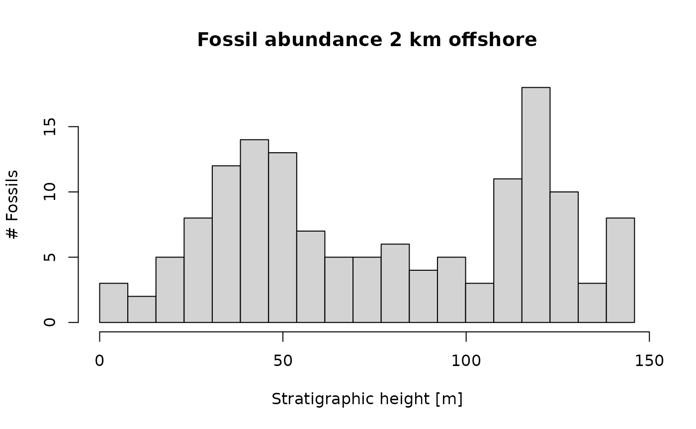
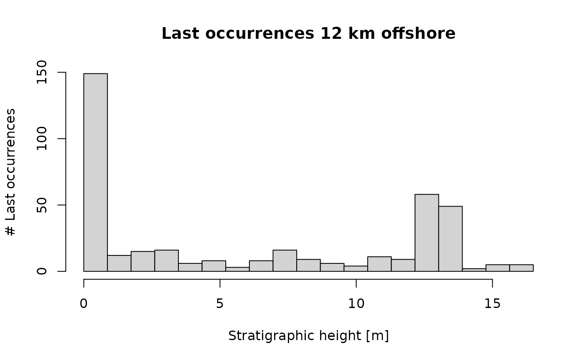
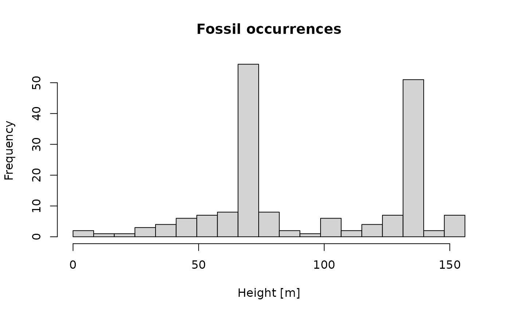

Introduction
This vignette provides an introduction to stratigraphic paleobiology applied to fossil occurrences and first/last taxon occurrences.
Modeling fossil occurrences and first/last fossil occurrences
Fossil occurrences and first/last occurrences can be considered
distinct events that occur at specific points in time or stratigraphic
position. We model them as point processes. In the StratPal
package, we provide two functions to simulate point processes:
p3, short for Poisson point process, to simulate events that occur at a constant ratep3_var_ratefor variable rate Poisson point processes to simulate events that occur at variable rates (e.g. extinction events etc.)
The usage of p3 is straightforward:
# simulate fossil occurrences over one Myr with an average of 8 occurrences per Myr
p3(rate = 8, from = 0, to = 1) |>
hist(main = "Fossil occurrences",
xlab = "Time [Myr]")For p3_var_rate, you can pass either a function that
specifies the rate:
# return 100 occurrences by setting n parameter
p3_var_rate(sin, from = 0, to = 9, n = 100) |>
hist(xlab = "Time [Myr]", main = "Fossil occurrences")
# note that negative rates (where sin < 0) are ignoredAlternatively, you can pass it two vectors x and
y. The rate is then determined by linear interpolation
between these vectors. This is equivalent to using the function
approxfun(x,y)
# decline in fossil occurrences from 50 to 0 over 1 Myr
p3_var_rate(x = c(0,1), y = c(50, 0), from = 0, to = 1, f_max = 50) |>
hist(xlab = "Time [Myr]", main = "Fossil occurrences")
Note that it is only a matter of interpretation whether the “events”
produced by p3 and p3_var_rate are fossil
occurrences or first/last occurrences. The conceptual framework holds
nonetheless.
Age-depth models
Throughout the examples, we use the same two age-depth model, which is from 2 km and 12 km offshore in scenario A. We define them
# define ADM 2 km from shore
adm_2km = tp_to_adm(t = scenarioA$t_myr,
h = scenarioA$h_m[,"2km"],
T_unit = "Myr",
L_unit = "m")
adm_12km = tp_to_adm(t = scenarioA$t_myr,
h = scenarioA$h_m[,"12km"],
T_unit = "Myr",
L_unit = "m")
# plot age-depth model
plot(adm_2km,
lwd_acc = 2, # plot thicker lines for accumulative intervals (lwd = line width)
lty_destr = 0) # don't plot destructive intervals (lty = line type)
T_axis_lab() # add time axis label
L_axis_lab() # add length axis label
plot(adm_12km,
lwd_acc = 2, # plot thicker lines for accumulative intervals (lwd = line width)
lty_destr = 0) # don't plot destructive intervals (lty = line type)
T_axis_lab() # add time axis label
L_axis_lab() # add length axis label
Stratigraphic distortions of “event” type data
Fossil occurrences
Any “event” type data can directly transformed using
time_to_strat:
p3(rate = 200, from = min_time(adm_2km), to = max_time(adm_2km)) |>
time_to_strat(adm_2km, destructive = TRUE) |>
hist(xlab = "Stratigraphic height [m]",
main = "Fossil occurrences 2 km offshore",
breaks = seq(from = min_height(adm_2km), to = max_height(adm_2km), length.out = 20))
Note the option destructive = TRUE in
time_to_strat. It makes sure any fossil occurrences that
coincide with a hiatus are destroyed, and do not appear in the
stratigraphic domain.
The pattern looks very different 2 km offshore:
p3(rate = 200, from = min_time(adm_12km), to = max_time(adm_12km)) |>
time_to_strat(adm_12km, destructive = TRUE) |>
hist(xlab = "Stratigraphic height [m]",
main = "Fossil occurrences 12 km offshore",
breaks = seq(from = min_height(adm_12km), to = max_height(adm_12km), length.out = 20))Not only is the section much shorter (not even 20 m), but ther are 2 distinct peaks at the bottom of the section and around 13 m. Comparing with the age-depth model shows that these locations correspond to times of extreme stratigraphic condensation (low sedimentation rates, indicated by a near-horizontal age-depth model). As a result, more time is represented per stratigraphic increment, leading to accumulations of fossil occurrences.
Last occurrences of common taxa
Last (and first) occurrences can also directly be transformed using
time_to_strat under the condition that the taxa are very
common. This assumption will be explored further below.
p3(rate = 200, from = min_time(adm_2km), to = max_time(adm_2km)) |>
time_to_strat(adm_2km, destructive = FALSE) |>
hist(xlab = "Stratigraphic height [m]",
main = "Last occurrences 2 km offshore",
breaks = seq(from = min_height(adm_2km), to = max_height(adm_2km), length.out = 20))
This would be the pattern of last occurrences in a section 2 km
offshore when the extinction rate is constant! The peaks coincide with
the hiatuses, as the last occurrences of the species that disappear
during the hiatus cluster at the hiatus surface. Note here that we used
the option destructive = FALSE for
time_to_strat to make sure the last occurrences appear at
the location of the hiatus. This is why the assumption of abundant taxa
is important: If taxa are rare, their last occurrence does not match
their actual time of extinction (Signor-Lipps effect), and the last
occurrences can be found further below the hiats.
The patter 12 km offshore is very different:
p3(rate = 200, from = min_time(adm_12km), to = max_time(adm_12km)) |>
time_to_strat(adm_12km, destructive = TRUE) |>
hist(xlab = "Stratigraphic height [m]",
main = "Last occurrences 12 km offshore",
breaks = seq(from = min_height(adm_12km), to = max_height(adm_12km), length.out = 20))
It almost perfectly matches the pattern of the fossil occurrences. This is because the offshore section is much more dominated by condensation (which influences both fossil occurrences and first/last occurrences equally), while the onshore section is dominated by hiatuses (which affect first/last occurrences). This shows it is important to understand how “event” type data is affected by hiatuses: is it preserved, or is it destroyed?
Range offset
t_ext = 1.5 # time of "true" extinction
r = 30 # rate of fossil occurrences
# simulate rate fossil occurrences of taxon
f_occ = p3(r, from = min_time(adm_2km), to = t_ext)
hist(f_occ)
# stratigraphically highest fossil found
highest_occ = f_occ |>
time_to_strat(adm_2km, destructive = TRUE) |> # destroy fossil occurrences
max(na.rm = TRUE)
# stratigraphic position of "true" extinction
h_true_ext = t_ext |>
time_to_strat(adm_2km, destructive = FALSE)
# distance between last occurence of taxon and location where they actually go extinct
strat_range_offset_m = h_true_ext - highest_occ
# time when last preserved fossil lived
t_last_occ = highest_occ |>
strat_to_time(adm_2km)
# time offset between true extinction and time when last fossil lived.
time_range_offset_myr = t_ext - t_last_occ
dist = scenarioA$dist_from_shore[2]
# define age-depth model and attach units to it
adm = tp_to_adm(t = scenarioA$t_myr,
h = scenarioA$h_m[,dist],
T_unit = "Myr",
L_unit = "m")
# plot age-depth model
plot(adm,
lwd_acc = 2, # plot thicker lines for accumulative intervals (lwd = line width)
lty_destr = 0) # don't plot destructive intervals (lty = line type)
T_axis_lab() # add time axis label
L_axis_lab() # add length axis label
p3(rate = 100, from = min_time(adm), to = max_time(adm)) |> # simulate fossil occurrences in time
get_height(adm, t = _, destructive = FALSE) |> # transfrom into depth domain
hist(breaks = seq(min_height(adm), to = max_height(adm), length.out = 20),
main = "Fossil occurrences",
xlab = "Height [m]")
Influence of niches
We increase the complexity of the pipeline by incorporating niche modeling. For this we need two components:
a niche definition that describes how “comfortable” a species feels along an environmental gradient
information on how that gradient changes with time
In this example we focus on water depth as gradient as it is included in the model outputs. The general modeling framework works for any type of gradient.
First, we define the niche. We do this using the helper function
cnd (capped normal distribution). It is a probability
density function of the normal distribution, multiplied by the factor
inc and capped at 1. A 1 reflects that the taxon is fully
within its prefferred environment, and a 0 reflects that is is outside
of its environment.
my_niche = cnd(mean = 10, # preffered water depth
sd = 5, # tolerance to water depth fluctiations
inc = 15, # multiplier
cut_neg = TRUE) # cut off negative avalues - the species does not surviva at land
x = seq(-2, 30, by = 0.1)
plot(x, my_niche(x), type = "l", xlab = "water depth", ylab = "preference")To get the gradient change with time, we extract water depth 2 km offshore from the example data:
t = scenarioA$t_myr
wd = scenarioA$wd_m[,"2km"]
gc = approxfun(t, wd) # define gradient change
plot(t, gc(t), type = "l", xlab = "Time [Myr]", ylab = "Water depth [m]")
Now we can combine these two ingredients to examine how the preffered niche changes the fossil abundance in the time domain.
p3(rate = 300, from = min_time(adm_2km), to = max_time(adm_2km)) |>
apply_niche_pref(niche_def = my_niche, gc = gc) |>
hist(xlab = "Time [Myr]", main = "Fossil abundance")
Here you can see that the taxon only occurs at times where the water depth is favorable for it. Around 2 Myr, the water depth is too shallow, and the fossil abundance is reduced.
With the basic niche modeling done, we can now combine it with the stratigrahic distortion by age-depth models to get an idea how niche preferences change the fossil abundance in the section.
p3(rate = 300, from = min_time(adm_2km), to = max_time(adm_2km)) |>
apply_niche_pref(niche_def = my_niche, gc = gc) |>
time_to_strat(adm_2km, destructive = TRUE) |>
hist(xlab = "Stratigraphic height [m]",
main = "Fossil abundance")We can see a general decrease in fossil abundance, but no longer gaps as were visible in the time domain. The latter is because the gaps in fossil abundance in the time domain coincide with hiatuses, and will thus not be visible in the stratigraphic domain. The general decrease in fossil abundance is because as the carbonate platform ages, the water depth on the platform is decreasing:
list("t" = t, "y" = wd) |>
time_to_strat(adm_2km) |>
plot(orientation = "lr", type = "l", xlab = "Stratigraphic position [m]", ylab = "Water depth [m]")